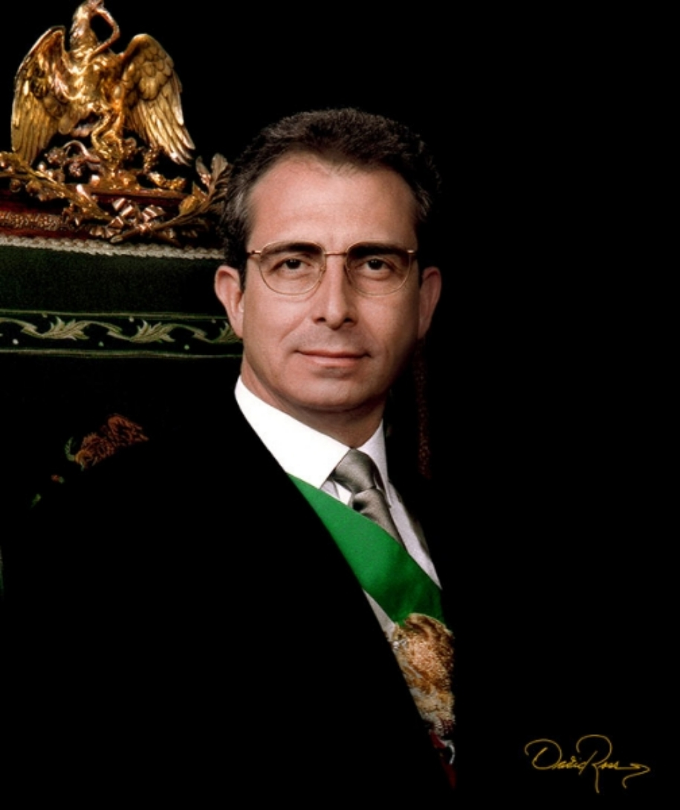

Ernesto Zedillo Ponce de León es un economista y político mexicano que se desempeñó como presidente de México desde el 1 de diciembre de 1994 hasta el 30 de noviembre de 2000.
El precio del dólar incrementó cerca del 114% (de $3.40 a $8.70) entre diciembre de 1994 y marzo de 1995 - el punto más álgido de la crisis-, lo cual causó de forma inmediata quiebras de miles de compañías, desempleo y que muchos deudores se vieran impedidos de pagar sus deudas. El gobierno de Zedillo ideó el Fondo Bancario de Protección al Ahorro,11 para apoyar a la banca nacional contra los deudores. Zedillo resolvió el problema por medio de dos préstamos hechos por los Estados Unidos a México por un total de 20 000 millones de dólares, logrando que el resto de su ciclo presidencial viera una recuperación del empleo y una sana administración de la economía mexicana al parecer por los cambios en el sistema económico que permitieron estabilidad económica relativa en el sexenio siguiente. En el terreno político inició y dio los primeros pasos a la democracia ejemplificando. Por otra parte, la oposición logró ganar por primera vez las gubernaturas de varios estados y convertirse en mayoría en el Congreso. Asimismo favoreció unas elecciones competidas en el año 2000, que permitieron por primera vez en 70 años la llegada a la presidencia de un candidato no emanado del Partido Revolucionario Institucional.